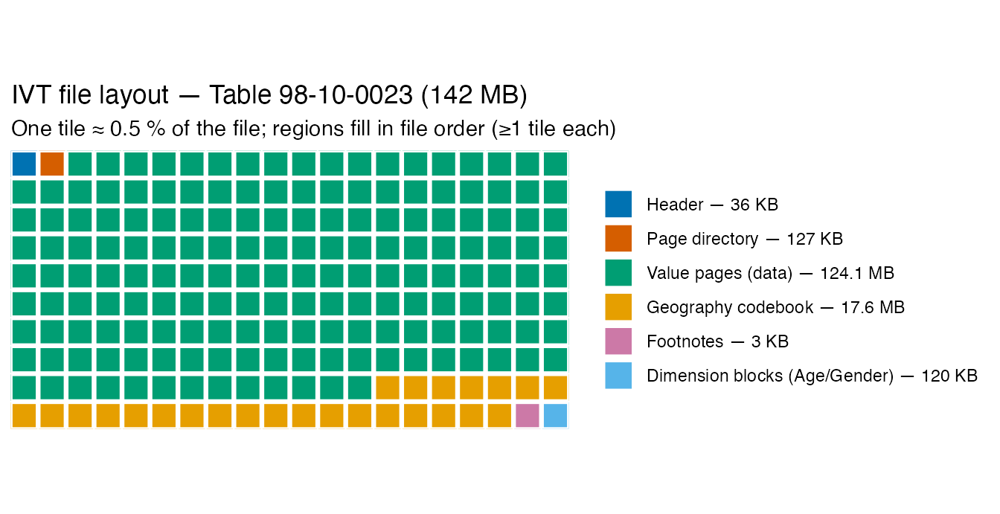

This vignette documents the Statistics Canada Beyond 20/20
.ivt binary format as reverse-engineered for
canivt, and shows how the package’s functions map onto each
part of the file. It is aimed at anyone who wants to understand,
validate, or extend the parser. For day-to-day use see
?read_ivt. Two more detailed references ship with the
package: the authoritative byte-format spec
system.file("notes/ivt-format.md", package = "canivt"), and
a terse catalog of every byte marker/signature the decoder keys on,
system.file("notes/markers.md", package = "canivt")
(self-checked by tests/testthat/test-markers.R).
One layout, one decoder
Every .ivt starts with a 4-byte signature ending
00 20 00; the modern census/custom lineage sets the leading
byte to 04. (A second, older container generation sets it
to 02 instead — see “An older survey-generation container”
near the end of this vignette; everything in this section applies to
both.) The file is one contiguous binary, and there is a single,
descriptor-driven, name/type-agnostic decoder: it reads the dimension
structure from the header, nests every dimension into a
power-of-two positional bitmap (data dimensions innermost, geography
outermost), and walks the value pages. What used to be documented as
“family 1” and “family 2” are not two formats — they
are two cases of this one layout, differing only in which
dimension straddles the fixed 2048-bit (256-byte) page
boundary:
- A data dimension straddles → geography is pushed fully into the page directory, one page per (geography, outer-data-coordinate). The reference table is 98-10-0241 (housing indicators by tenure; 166 geographies, 7 dimensions). Historically “family 1.”
- The data dimensions fit in ≤ 2048 bits → geography straddles: several geographies share each page’s presence record, and the directory is a flat list of geography-window pages. The reference table is 98-10-0023 (age × gender, down to dissemination areas; 63,404 geographies, 14.5 M cells). Historically “family 2.”
The 1991 census files
(e.g. 1003011, E9101 — population by single year of age
× sex) are the same container with pre-DGUID conventions:
int16/int32 value pages and a bilingual,
inline codebook. They decode through the same path.
read_ivt() auto-detects the case via
ivt_family() (which just reports whether geography
straddles), but the cell decode and metadata read are shared for
every file — family only tags provenance. Every
.ivt in the corpus decodes; there are no unsupported
files.
library(canivt)
tab <- read_ivt(ivt_download("98100023"))
tab
#>
#> ── IVT table 98100023 ──────────────────────────────────────────────────────────
#> Age (in single years), average age and median age and gender: Canada, provinces
#> and territories, census divisions, census subdivisions and dissemination areas
#> 14492239 cells | 63404 geographies | 3 dimensions | 8 footnotes
#> geography labelled by uid (read_ivt(geo_attributes=TRUE) for names)File layout at a glance
The high-level region order is the same for every IVT: a small header, the page directory, the value pages (which dominate — typically ~85–90 % of the file), then the codebook (geography identifiers/labels and the data dimension members), with footnotes near the tail.
library(ggplot2)
library(dplyr)
# Representative byte regions of the geography-straddle reference table
# 98-10-0023 (142,016,485 bytes), in file order. Every IVT follows this order.
regions <- data.frame(
region = c("Header", "Page directory", "Value pages (data)",
"Geography codebook", "Footnotes", "Dimension blocks (Age/Gender)"),
size = c(35950, 126800, 124122962, 17603000, 3000, 120485)
)
# Allocate a 20x10 = 200-tile waffle grid: each region gets tiles proportional
# to its byte size, but at least one tile so even the slivers show. The floor
# replaces the old ad-hoc per-region "exaggeration" scaling.
n_cols <- 20L
n_rows <- 10L
n_tiles <- n_cols * n_rows
alloc_tiles <- function(sizes, total, min_tiles = 1L) {
tiles <- rep(min_tiles, length(sizes)) # everyone starts at the floor
extra <- total - sum(tiles) # tiles left to hand out
ideal <- extra * sizes / sum(sizes) # proportional, largest-remainder
base <- floor(ideal)
tiles <- tiles + base
short <- extra - sum(base) # rounding shortfall
if (short > 0) {
take <- order(ideal - base, decreasing = TRUE)[seq_len(short)]
tiles[take] <- tiles[take] + 1L
}
tiles
}
regions$tiles <- alloc_tiles(regions$size, n_tiles)
# One row per tile, filled in file order, then wrapped onto the grid reading
# left-to-right, top-to-bottom.
regions$region <- factor(regions$region, levels = regions$region)
tile_region <- rep(regions$region, regions$tiles)
idx <- seq_along(tile_region) - 1L
tiles <- data.frame(
region = tile_region,
col = idx %% n_cols,
row = idx %/% n_cols
)
# legend label: real size plus the tile count it maps to
human <- function(b) ifelse(b >= 1e6, paste0(round(b / 1e6, 1), " MB"),
ifelse(b >= 1e3, paste0(round(b / 1e3), " KB"),
paste0(b, " B")))
labels <- paste0(regions$region, " — ", human(regions$size))
ggplot(tiles, aes(x = col, y = row, fill = region)) +
geom_tile(colour = "white", linewidth = 0.8, width = 0.95, height = 0.95) +
scale_y_reverse(NULL, breaks = NULL, expand = c(0, 0)) +
scale_x_continuous(NULL, breaks = NULL, expand = c(0, 0)) +
scale_fill_brewer(palette = "Set2", name = NULL, labels = labels) +
coord_equal() +
labs(title = "IVT file layout — Table 98-10-0023 (142 MB)",
subtitle = "One tile ≈ 0.5 % of the file; regions fill in file order (≥1 tile each)") +
theme_minimal(base_size = 11) +
theme(legend.position = "right", panel.grid = element_blank(),
plot.title.position = "plot")
So roughly 87 % of the file is data; the geography codebook is the second-largest region (~12 %), and the header, directory, footnotes and per-dimension member blocks are slivers. All multi-byte integers are little-endian, and value runs frequently begin on odd (unaligned) byte offsets — a property that defeats naive aligned scans. Byte offsets in the parser are 0-based to match the layout.
Reading the layout from the header
The fixed header points at every major section, so the layout can be
read up front without scanning for markers.
ivt_f2_header_layout() (uniform across the modern and
legacy formats) returns these as byte offsets:
| header offset | section |
|---|---|
u32 @32 |
dimension descriptor (per-dimension count, type, name + title) |
u32 @40 / u32 @48
|
French / English title blocks — set in the legacy format, zero in the modern one (the version indicator) |
u32 @552 |
geography field/attribute count (11 modern / 12 legacy) |
u16 @558 |
page-directory start — low 16 bits only (the true
start is u16 + k·65536 for the smallest k
whose first entry validates; k = 0 for the reference
tables, k > 0 for a few large tables) |
u32 @572 |
codebook region start |
A further section-pointer region
(≈ @544..1080) is read the same way, each pointer resolving
to a block directory of the identical 8-byte entry shape:
@544 → the master directory (titles, the dimension
descriptor, identity/notes blobs, product id), @712 → the
data-quality-flag legend, and @824 + 14·(k−1) → the
per-dimension codebook block directory (member labels, ordinals,
footnotes) for dimension k. So the codebook, notes and
legends are all located from the header, with bounded
tail scans surviving only as fallbacks.
The page directory itself is a contiguous run of
[u32 offset][u16 size][u16 size] records (the two sizes
agree; the size is the page’s allocated length), in geography
member order. Each record points at a page of value data.
Dimensions
The dimension descriptor declares each dimension uniformly. For 98-10-0023: Geography (63,404) × Age (128) × Gender (3). The decoder nests them positionally — geography outermost, the data dimensions inner in descriptor order with the last (here Gender) fastest-varying / the unit of value storage — and never asks which dimension is which by name or type byte. Geography is the first descriptor dimension in every layout except the profile lineage (a few 1981/1991 profile tables store a one-member “Values” placeholder first and put geography last); the nesting handles that with no special case, because it is purely positional. Exactly one dimension straddles the 2048-bit page boundary (§ below), which is what the historical “family” label really named.
meta <- ivt_metadata(ivt_download("98100023"))
data.frame(dimension = meta$dimension_names,
members = meta$dimension_counts)
#> dimension members
#> 1 Geography 63404
#> 2 Age (in single years), average age and median age 128
#> 3 Gender 3Case A — geography straddles: a single page directory (98-10-0023)
When the data dimensions fit in one 2048-bit presence record, geography is the dimension that straddles the page boundary, so several geographies share each page and the directory is one flat list. Here each directory record is a page that packs 4 geographies:
[4-byte marker][4 × 64-byte presence records][0xFF trailer][head block][dense value run]- the marker’s low nibble is the value width:
0x8→ float64,0x4→ int32,0x2→ int16 (so age counts are int16 but the average/median-age statistics are float64); its third byte encodes the trailer length and its fourth an auxiliary head block of32·(b3 − 8)bytes (0 on most pages; the 2006 census vintage uses 64/128-byte heads and appends absent-cell mask records after the value run); - each geography’s presence is a 64-byte record
stored byte-pair-swapped — swap adjacent bytes, then
read a positional nibble per member, with the three genders
Total/Men/Women at bits 3/2/1 (the all-present marker is
0xE); -
values are dense little-endian over the present
(member, gender)cells, member-major / gender-inner. Only non-zero cells are stored — the StatCan CSV publishes the zeros, so a missing cell means 0.
ivt_f2_geo_attributes() decodes the full per-geography
codebook: name, DGUID, geographic level and type (+ abbreviation), two
geocodes, the data-quality flag and note, and the non-response rate —
all exact for 63,404 geographies.
Case B — a data dimension straddles: per-geography directories (98-10-0241)
When the data dimensions alone overflow 2048 bits, a data dimension straddles instead and geography is pushed fully into the directory — each geography gets its own page directory at a fixed stride:
[0] header: identity + dimension names
[37167] geography index: one page-directory per geography, stride 0x1000
~1.08M..~55.4M value pages
~56.93M..EOF footnote legend + codebookGotcha. The directories are grouped 8 to a
0x8000region (288 entries used per0x1000slot, the rest zero-padded). Striding by0x8000instead of0x1000silently reads only every 8th geography — 21 of 166. The correct stride is0x1000.
Here the page presence is a 256-byte positional,
dimension-padded bitmap: 32-byte rows per Period; Statistics in
8-byte blocks; Housing indicators 0..5 within a block (the two bytes of
each adjacent housing pair are byte-swapped, so housing
h is read at stat*8 + bitwXor(h, 1)); and each
presence byte’s bits 7..1 flag the 7 Tenure members (bit 0 padding).
0xFE therefore means “all 7 tenure values present”.
# bits 7..1 of 0xFE flag the 7 tenure members; bit 0 is padding
bitwAnd(bitwShiftR(0xFE, 7:1), 1L)
#> [1] 1 1 1 1 1 1 1
#> [1] 1 1 1 1 1 1 1This is the same presence machinery as Case A, just with a data
dimension in the straddle role: the presence granularity is the
innermost dimension, the “all present” marker is
2^n − 2 over that bit width, the per-dimension strides are
power-of-two padded and fixed, and one byte of each adjacent pair is
swapped. The single decoder (ivt_layout() +
ivt_decode()) computes the straddle dimension and these
strides from the descriptor, so both cases run the identical code.
The codebook: labels, geographic ids, footnotes
The tail of the file holds the codebook: for each dimension, several
parallel, member-ordered arrays of length-prefixed
(“Pascal”: one length byte then that many text bytes) strings — member
ordinals, the name (English then French) and, for Geography, the level,
abbreviations, classification code, and full DGUID
(2021A000011124 = Canada). Labels are encoded in
Windows-1252: the 0x80–0x9F block carries
real punctuation (e.g. 0x92 = the curly apostrophe in
Tla'amin Lands), so the byte-class test that frames Pascal
records must accept it — otherwise such a label aborts a record and
splits the array mid-stream.
# labelled long table; read_ivt(geo_attributes = TRUE) attaches the full
# geography attribute table so tidy can label by name + level.
tab <- read_ivt(ivt_download("98100023"), geo_attributes = TRUE)
ivt_tidy(tab)
#> # A tibble: 14,492,239 × 7
#> geo_label geo_name geo_uid geo_level age gender value
#> <chr> <chr> <chr> <chr> <chr> <chr> <dbl>
#> 1 Canada Canada 2021A000011124 Country Total - Age Total - Gen… 3.70e7
#> 2 Canada Canada 2021A000011124 Country Total - Age Men+ 1.82e7
#> 3 Canada Canada 2021A000011124 Country Total - Age Women+ 1.88e7
#> 4 Canada Canada 2021A000011124 Country 0 to 14 years Total - Gen… 6.01e6
#> 5 Canada Canada 2021A000011124 Country 0 to 14 years Men+ 3.09e6
#> 6 Canada Canada 2021A000011124 Country 0 to 14 years Women+ 2.93e6
#> 7 Canada Canada 2021A000011124 Country 0 to 4 years Total - Gen… 1.83e6
#> 8 Canada Canada 2021A000011124 Country 0 to 4 years Men+ 9.39e5
#> 9 Canada Canada 2021A000011124 Country 0 to 4 years Women+ 8.92e5
#> 10 Canada Canada 2021A000011124 Country Under 1 year Total - Gen… 3.43e5
#> # ℹ 14,492,229 more rowsFootnotes are read from the header, not by scanning.
Table-level (cube) notes come from the master directory; each
dimension’s notes come from its per-dimension slot directory (the
@824 + 14·(k−1) table above). Within a dimension each note
carries a scope — a member note (annotating
one geography or data member) or a whole-dimension note —
resolved structurally: a 84 01 member bitmap opens the
footnote region and lists, in member order, which members carry a note,
so each note surfaces with its scope, owning
dimension and
member_id/member_refs. The text itself is
tagged Footnote N (EN) / Renvoi N (FR); a
bounded tail scan of those markers survives only as a loud fallback when
the slot directories list none. (Those same Renvoi N texts
also appear per-member in the geography directory’s tail as
[01 01][u16 len-4][01] text blobs — told apart from member
arrays by their NUL-free payload so they are not miscounted as
attributes; see markers.md §F.) The legacy pre-DGUID files
instead cite notes as (N) markers embedded in the member
labels, linked back to the members that carry them.
str(meta$footnotes[[1]])
#> List of 7
#> $ language : chr "en"
#> $ number : int 1
#> $ text : chr "Age 'Age' refers to the age of a person (or subject) of interest at last birthday (or relative to a specified, "| __truncated__
#> $ scope : chr "dimension"
#> $ dimension : chr "Age (in single years), average age and median age"
#> $ member_id : int NA
#> $ member_refs: int(0)
length(meta$footnotes)
#> [1] 8The 1991 (pre-DGUID) files (1003011)
The 1991 census files are the same container in the
geography-straddle case, with pre-DGUID conventions — fully decoded
through the same read_ivt() path (cell-exact against the
scraped Beyond 20/20 ground truth):
- value pages are
int16/int32(markers0x82/0x84) rather than float64, and presence uses the same byte-pair-swapped positional bitmap; - geography is a single inline block per chunk of
"<name> (<GEOUID>) <flag>"— a bilingual name (Newfoundland | Terre-Neuve), a bare GEOUID (a shortened DGUID without the year/area-type prefix), and a data-quality flag; - the table identity is stored out of line (the
@40/@48header pointers, which are zero on the modern DGUID files — that difference is the format-version signal), and footnotes are the(N) textform described above.
A profile lineage of pre-DGUID files (some 1981/1991 profiles) additionally puts geography last behind a one-member “Values” placeholder; the positional nesting absorbs that without a special case.
Pre-2016 tables predate the modern 8-digit b2020 .zip
endpoint that ivt_download() uses, so fetch the raw
.ivt through its catalogue row
(statcan_ivt_download() resolves the
Download.cfm?PID= link and returns the local path), then
read it the same way:
row <- subset(statcan_ivt_catalogue(), catalogue == "1003011")
leg <- read_ivt(statcan_ivt_download(row)) # 41,859 geographies, Age(110) × Sex(3)
ivt_tidy(leg)
#> # A tibble: 8,671,244 × 6
#> geo_label geo_name geo_uid single sex value
#> <chr> <chr> <chr> <chr> <chr> <dbl>
#> 1 Canada Canada 00 Total - Age Groups Total - Sex 27296860
#> 2 Canada Canada 00 Total - Age Groups Male 13454580
#> 3 Canada Canada 00 Total - Age Groups Female 13842280
#> 4 Canada Canada 00 0-4 years Total - Sex 1906500
#> 5 Canada Canada 00 0-4 years Male 975765
#> 6 Canada Canada 00 0-4 years Female 930740
#> 7 Canada Canada 00 Under 1 Total - Sex 393500
#> 8 Canada Canada 00 Under 1 Male 201600
#> 9 Canada Canada 00 Under 1 Female 191900
#> 10 Canada Canada 00 1 Total - Sex 394990
#> # ℹ 8,671,234 more rowsAn older survey-generation container (02 00 20 00)
A second, older Beyond 20/20 container generation shares the same
page/value/ codebook model but starts with 02 00 20 00
instead of 04 00 20 00 — byte 0 is a container-generation
tag, not part of a fixed constant, and
ivt_family()/read_ivt() handle both
transparently. This generation covers older survey product lines rather
than census geography tables: Health Statistics at a Glance (1999), the
1996 Census of Agriculture, and the 1996 Small Area Business survey.
Two things are structurally different, both confined to the descriptor and codebook:
-
No geography dimension. These are single-area
survey products — the
REGION/GEOGRAPHYdimension carries no DGUID or geographic identifiers, soread_ivt()treats it as an ordinary, fully-labelled data dimension:metadata$geographiesis empty andcellshas nogeocolumn. -
Generated time-series labels. A reference/time
dimension can be stored with no code or label array at all — only a
per-member date table (one-byte populated-slot flags +
a 3-byte date, days since
0000-03-01). Member labels (typically a year) are generated from those dates. Because the presence bitmap addresses members by their slot rather than a dense1..countrange, and deleted members leave holes in the slot numbering, the decoder’s layout is slot-aware here.
# Health Statistics at a Glance 1999 is Borealis-hosted (see vignette("borealis")
# for browsing/downloading): Quantifier x Geography x Period, no geography
# dimension, year labels generated from the on-disk dates.
path <- borealis_ivt_download(hits[1, ]) # hits from borealis_ivt_catalogue()
hsg <- read_ivt(path)
ivt_tidy(hsg)Values in this generation are complete integers in the indicator’s
own unit — not a fixed-point encoding needing a decimal scale. The unit
is stated in the relevant member’s description text, surfaced via
ivt_members()’s
description/description_fr columns where it
can be mapped unambiguously.
See inst/notes/ivt-format.md (“The older
02 00 20 00 survey-generation container”) and
inst/notes/markers.md §E.1 for the exact byte framings.
How canivt maps to the format
| Region | Function(s) | Source file(s) |
|---|---|---|
| Header identity, dimension descriptor, layout |
ivt_metadata(), ivt_f2_header_layout(),
ivt_f2_descriptor()
|
R/codebook-f2.R, R/dimdir.R
|
| Page directory / geography index | (internal) ivt_layout()
|
R/decode.R, R/container*.R
|
| Presence bitmap + value codec (both straddle cases) | (internal) ivt_decode()
|
R/decode.R, R/decode-f2.R
|
| Codebook labels, DGUIDs/GEOUIDs, geography attributes, footnotes |
ivt_metadata(),
ivt_f2_geo_attributes()
|
R/codebook-f2.R, R/dimdir.R,
R/read-f2.R
|
| Tidy / write outputs |
ivt_tidy(), ivt_write_*()
|
R/read.R, R/write.R
|
Validation
canivt is validated against the StatCan CSV/metadata
downloads: the data-dimension-straddle reference (98-10-0241) all 166
geographies and 7,489,464 cells exact; the geography-straddle reference
(98-10-0023) all 63,404 geographies and 14.5 M cells exact, plus every
geography attribute and the Age/Gender labels; and the 1991 table
(1003011) cell-exact for all scraped ground-truth geographies. The
unified decoder is additionally byte-identical to the
two former decoders on six reference tables, and viewer/CSV-validated
across the wider corpus — 1996–2021 census tables, 1981/1991 profiles,
2001/2006 F-series, large 2016 98-400-X crosstabs,
commuting-flow tables, custom extracts, the Business Register lineage,
and the older 02 00 20 00 survey generation. An opt-in
regression ledger runs the whole local corpus through
read_ivt() and asserts the exact cell count per table. For
older vintages the package scrapes the Beyond 20/20 web viewer for
ground-truth data to validate against. See the tests/
directory and the notes file (inst/notes/coverage.md,
decode-history.md) for the exact figures.